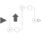
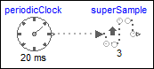

SuperSampleSuper-sample the input clock and provide it as output clock |

|
Information
This information is part of the Modelica Standard Library maintained by the Modelica Association.
This block super-samples the clock input signal u and provides it as clock output signal y.
To be more precise: Clock y is factor-times faster than clock u. The first activation of clock y coincides with the first activation of clock u. The super-sampling factor is defined by Integer parameter factor.
Example
The following
example
generates a periodic clock of 20 ms period, and
then super-samples the resulting clock with a factor of 3:
|  |
 |
|
| model | simulation result |
As can be seen, superSample introduces factor-1 additional clock ticks for the output clock y. The super-sampling factor = 3 is displayed in the icon of the superSample block. Note the up-arrow in the icon of the superSample block indicates that clock superSample.y is faster as clock superSample.u.
Parameters (1)
| factor |
Value: Type: Integer Description: Super-sampling factor (>= 1) |
|---|
Connectors (2)
| u |
Type: ClockInput Description: Connector of a clock as input signal |
|
|---|---|---|
| y |
Type: ClockOutput Description: Connector of a clock as output signal (clock y is faster as clock of u) |
Used in Examples (1)
|
Modelica.Clocked.Examples.Elementary.ClockSignals Example of a SuperSample block for Clock signals |